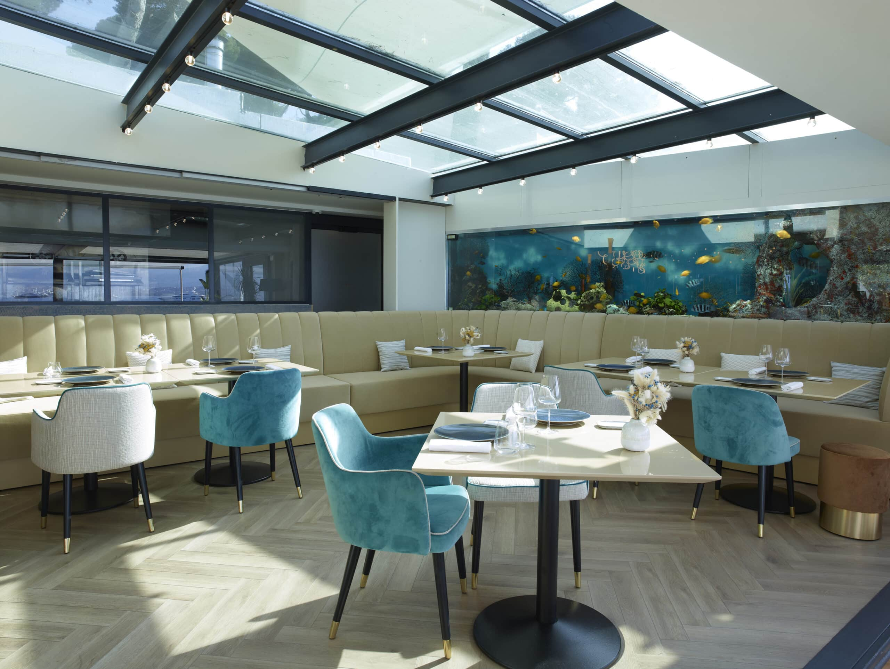

Univers I — Restaurant
Restaurant
de Bacon
La table historique
Le classique
de la Côte.
C'est ici que tout a commencé, en 1948. La salle historique du Restaurant de Bacon ouvre ses baies vitrées sur la Méditerranée, face au vieil Antibes et au Massif du Mercantour.
Le Chef Nicolas Davouze y signe une cuisine marine fidèle à la tradition de la maison — soupe de roche, bouillabaisse, poissons entiers grillés au feu de bois — relue avec la précision d'aujourd'hui. Les agrumes viennent de Mr Roméo, les œufs de la ferme de Gabin. Tout, ici, a un nom.



Capacité
80 couverts
en salle & terrasse
Service
12h — 14h
19h — 22h
Cuisine
Marine &
Méditerranéenne
Vue
Baie d'Antibes,
Mercantour
Signature
La Bouillabaisse
Le geste
fondateur.
Servie depuis l'ouverture de la maison en 1948, la bouillabaisse de Bacon est l'un des derniers vrais classiques de la Côte d'Azur. Soupe de roche passée trois fois, rouille au safran, croûtons frottés à l'ail, poissons entiers découpés à la table. Pour deux personnes minimum.
Réservation
Une table face à la mer.
Réservation en ligne ouverte 24h/24. Pour les groupes de plus de 8 couverts, les privatisations et les événements, contactez-nous directement.
Réserver une table